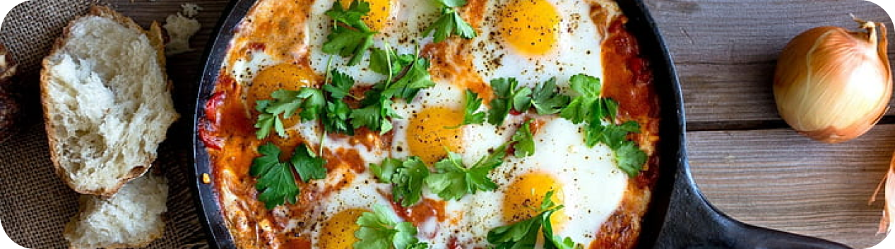

NORTHERN AFRICA
Shakshuka

- 1 sdm minyak zaitun
- 1 siung bawang bombay
- 2 siung bawang putih (cincang)
- 1 pcs paprika merah (potong dadu)
- 2 kaleng (@400gr) tomat kaleng
- 2 sdm tomat puree
- 1 sdt bubuk cabai
- 1 sdt bubuk paprika
- 1/2 sdt cabai kering
- 1 sdt gula
- Garam secukupnya
- Lada secukupnya
- 5 butir telur
- Roti gandum secukupnya
- Daun bawang untuk garnish
- 1 sdt cumin
- Panaskan minyak zaitun dalam panci, tumis bawang bombay hingga harum & lembut, masukkan bawang putih. Aduk rata.
- Tambahkan paprika dan kembali tumis selama 5 menit hingga matang.
- Masukkan tomat puree, tomat kaleng, bubuk cabe, cumin, bubuk paprika, cabe kering, gula, garam & lada. Masak kurang lebih 10 menit hingga mendidih dan berkurang. Cicipi rasa.
- Bentuk lubang bulat sebanyak 5 buah di masakan tomat tersebut, kemudian masukkan satu per satu telur dalam lubang ters ebut. Tutup panci dan biarkan masak 10 - 15 menit (hingga telur matang).
- Letakkan adonan dengan telur di atas roti gandum, beri taburan daun bawang, sajikan.